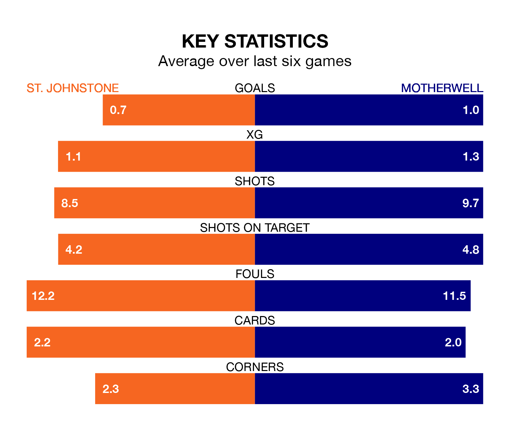

Saturday's match at McDiarmid Park sees two relegation candidates play each other, as 10th-ranked St. Johnstone host ninth-placed Motherwell.
St. Johnstone have picked up 20 points from their first 20 Premiership games, with four wins and eight draws.
That is the same number of points as Motherwell have collected, having also won four and drawn eight.
In the last 10 years, St. Johnstone and Motherwell have played each other on 36 occasions. St. Johnstone won 18 of them, Motherwell 10, and they drew eight times.
On average, the Saints scored 1.4 goals and Motherwell 1.1 in those matches.
Their last meeting was on December 9, when they played out a 1-1 draw.
With 14 goals in 21 games so far this season, St. Johnstone are the league's second-lowest scorers with 0.7 goals per game. And they are conceding at an average rate, letting in 28 goals at a rate of 1.3 per game.
Motherwell are also below average scorers, with 1.2 goals per game, compared to a league average of 1.3. They have conceded 1.6 goals per game.
The Saints are in disappointing form in Premiership, with one win and three draws from their last six games.
And also with a win and three draws over that period, the away side's form is identical – they have both taken six points from 18.
In Mika Bieveth, Motherwell have one of the league's most on-form strikers so far this season. He has notched six goals in 14 appearances, to sit ninth in the scoring charts.
His goal rate of one every 170 minutes is slightly quicker than that of Nicholas Clark, the hosts' top scorer with a goal every 94 minutes, and a total of four goals in six games.
St. Johnstone's last match was on Wednesday, a 1-1 draw against Aberdeen, with David Keltjens getting the goal for the Saints.
Motherwell drew 2-2 with Hibernian last time out, on January 2, with Bevis Mugabi and Thelonius Bair on the scoresheet.
Saturday's match will be refereed by Colin Steven, who has taken charge of five Premiership games so far this season, issuing no red cards and booking 23 players. He has awarded one penalty.
The last Motherwell game Steven refereed was the 4-2 loss at home against Aberdeen on November 1. He is yet to oversee a match featuring St. Johnstone this season.
Updated: 08:51 (UTC), 25/01/24